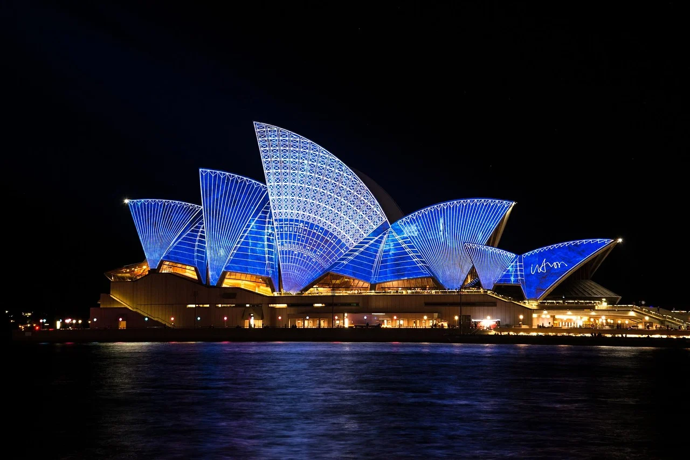

"Una de las mejores experiencias de mi vida fue haber estado viviendo aca, es otro planeta"
En esta oportunidad les compartimos la historia de Nahuel, quien nos cuenta cómo es vivir en Australia y cómo es su experiencia trabajando en el rubro de la construcción sin tener experiencia previa! Esperamos que disfruten la experiencia tanto como nosotros, y que se animen a empezar a planear su experiencia propia!
Mi llegada a Australia
Llegué a Sydney unos días antes de año nuevo 2020, época cara, pero estaba decidido a recibir el año en esta ciudad. Mi primer hospedaje fue un hostel que había reservado desde Argentina. Pagué la exorbitante cantidad de AUD 651 (USD 468) por 11 noches, no cometan el mismo error! Igualmente, tenía muy buenas recomendaciones (Wake Up Central) y no me decepcionó. Conocí gente al primer día de haber llegado y son mis amigos hasta el día de hoy. Nos pasamos la mitad del día 31 sentados apartando un lugar para ver el increíble show de fuegos artificiales sobre el Harbour Bridge y el Opera House, y fue hermoso, pero no volvería a ir tan temprano! Hay muchas opciones para ver los fuegos artificiales y para todos los presupuestos, desde tirarte en algún parque hasta fiestas en yates o barcos privados. En ese momento Australia estaba en el pico de la temporada de incendios forestales y hubo días en que el cielo de la ciudad se tornaba humo y apenas se veía el sol. Toda la costa sur del estado estaba en alerta constante y en Victoria había focos enormes fuera de control, así que viajar estaba totalmente fuera de los planes. Me tomé todo el primer mes para vacacionar por la ciudad y las tremendas playas que hay a lo largo de la costa. Aprendí a manejarme en el transporte público (bus, tranvía, ferry, tren) que con la Opal (tarjeta de transporte), tenés ciertos descuentos tarifarios como mitad de precio los domingos. También aproveché a ir a bares y boliches que hay en la zona céntrica: Establishment, Ivy, y la zona de TheRocks y el puerto. Dato: al centro de Sydney se le dice normalmente “La City” o CBD.
Alojamiento
Después del hostel me mudé a una casa muy cerca de CBD, de tres pisos y bastante linda. Pagaba AUD 225 (USD 162) por semana en habitación compartida con una persona más. En total éramos 8 chicos, todos backpackers o estudiantes, de 8 países distintos! Muy linda experiencia, super multicultural. Si tienen la oportunidad, se las recomiendo.
Trabajo
Comencé a buscar trabajo luego de armarme dos currículums distintos, uno para labour/construcción y otro para hospitality. Yo apuntaba al rubro de construcción porque es algo que jamás había hecho y me gustaba la posibilidad de aprender, además sabía que era un rubro bien pago y que había mucha demanda. Previamente había hecho un curso para sacar un permiso que en casi todos los trabajos de construcción te piden, la White Card. Si bien hay trabajos en los que no la necesitas, recomiendo siempre hacerla porque te da muchas más oportunidades a la hora de buscar empleo. Empecé a aplicar a lo loco por las apps que se usan para esto (principalmente Seek, pero también Gumtree y AirTasker), vía mail, vía Facebook y vía contactos de amigos. Después de 2 semanas aproximadamente, me contactaron de una empresa para hacerme preguntas básicas sobre mi visa y pasaporte y me preguntaron si estaba dispuesto a hacer un chequeo médico (todos los gastos a cuenta de la empresa) y comenzar a trabajar. Antes de comenzar tuve que hacer interminables inducciones, ya que se trataba de una obra grande. Te capacitan sobre el proyecto, las medidas de seguridad y qué hacer en caso de emergencias. A principios de febrero ya estaba trabajando, en blanco, con contrato firmado y con sueldo base de AUD 30 (USD 22) por hora. Sobre el proyecto: la obra se llama WestConnex. Consiste en un sistema de túneles viales de 32 km en total para unir el oeste con el sur de Sydney y así aliviar las autopistas congestionadas. Según el gobierno esta obra junto con la del Metro de la ciudad son las de mayor envergadura en rubro transporte a nivel nacional y a mí me encanto ser parte! Me toco trabajar en la etapa final de uno de los trayectos de 9 km, construyendo una estructura con mallas metálicas sobre el cableado para protegerlo contra incendios. No era un trabajo pesado y muchos éramos backpackers. Salario Me pagaban horas extras a 1.5 el valor hora; domingos y feriados era el doble, y public holidays 2.5 el valor de la hora! Trabajé el domingo de pascuas y llegué a ganar AUD 75 (USD 54) por hora ese día!
Covid 19
En marzo llegó el COVID-19. Australia, al igual que el resto del mundo, entró en cuarentena y todo el panorama se volvió incierto. Las calles se empezaron a vaciar, los bares y boliches comenzaron a cerrar y los viajes a cancelarse. El gobierno decretó que ciertas áreas críticas iban a continuar con sus labores normales y entre ellas estaba la construcción, así que afortunadamente nunca deje de trabajar durante la pandemia. Amigos cercanos tuvieron que volver a sus países de origen luego de perder sus trabajos en hospitality, rubro que fue destrozado ante la falta de turismo.